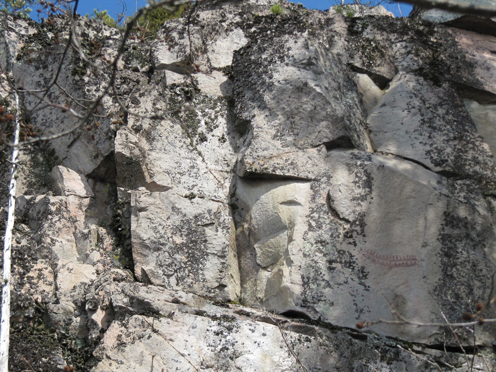

Maljan seinämässä saattaa nähdä korkealla kalliossa ainakin kolme selvästi erottuvaa kuvaa tai kuvaryhmää kolmessa eri kohdassa. Näkyvimmät kuvat ovat kaariaiheryhmä, jota Pekka Kivikäs kutsuu nimellä Kaksoisveneet, sekä hieman pohjoisemapana, mutta aivan yhtä ylhäällä sijaitsevat kaksipäinen hirvikaari sekä koukkupolvinen hirvi.
Kuva Saraakallion Maljan seinämästä. Kuvassa oikealla voi nähdä Kaksoisveneet. 
Kuva: Karoliina Järvinen, 2011